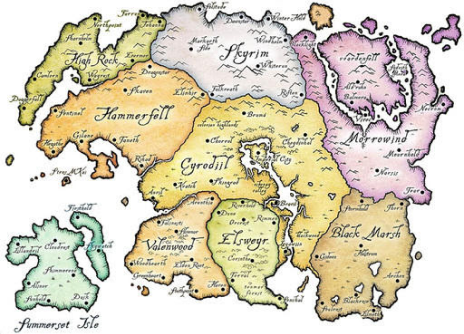

Об игре
Скайрим игра с большим открытым миром и с интересной прокачкой персонажа, у игрока есть 18 древ прокачки умений от умения пользоватся тем или иным оружием, до умения готовить алхимические зелья, ковать оружие и бронью и зачаровывать их. и в каждом древе есть навыки, и тогдалее и тому подобное

лор серий игр the elder scrolls глубок и обширен, разные расы, миры, страны, государства, оружия, магий, руины, животных, монстров, драконов и тогдалиее и тому подобное

Выход на свет
игра вышла на пладформах Windows, PlayStation 4, Xbox One, PlayStation 5, Xbox Series X/S ,Nintendo Switch: